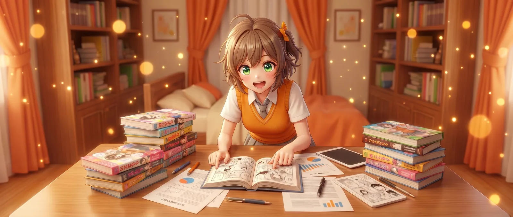

黄色いおまとめ忍者参上！！
クライアント: マクニカ／媒体: 営業資料 / Webサイト / 展示会・セミナー配布用冊子
「“名刺をまとめて送る→1週間後にテンプレ送信”という展示会あるあるの徒労感と、『録音＋撮影＋10秒登録→60秒でパーソナライズメール』という体験の鮮やかさを対比させる構成にしました。」
「「機能説明ではなく“受け取った側の驚き”から語ってもらえたことで、お客様が自社でのシーンを具体的に想像できるようになりました。」」この事例を詳しく見る →

複雑な機能・無形のサービスも、
読者が思わず読み進めるマンガで届けます。
いずれのフォーマットにも展開可能。
Web集客のCVRを引き上げる
LPのファーストビュー直下に商品紹介マンガを配置すると、訪問者は「絵を眺める」感覚でスクロールを始めるため、直帰率が下がりCVRが向上します。導入企業の平均で滞在時間2.3倍、CVR1.4〜2.1倍の改善事例があります。
ヒーロー漫画 → 機能要約 → 詳細スペック → CTA、という縦長構成と相性が良く、漫画から切り出した1コマをFV画像として転用することも可能です。
商談・展示会で配布する
展示会・商談・代理店配布用の三つ折り／A4冊子に展開できます。文字主体の会社案内に比べて手に取って開いてもらえる確率が大幅に高く、ブースでの足止め効果が期待できます。
裏表紙にQRコードを付けると、紙→Web（LP・お問い合わせ）への送客が計測可能になり、展示会後のリード化率を可視化できます。
スクロールを止めて読ませる
X・Instagram・TikTok・Meta広告の縦型クリエイティブとして、漫画の1〜数コマを切り出して投稿できます。「広告らしくない」異質さがスクロールを止め、クリック率・保存率の改善に繋がります。
1本の漫画から複数の派生クリエイティブを生み出せるため、月次の素材供給コストを抑えながらA/Bテストを回せます。
提案の説得力を底上げする
提案書冒頭に「導入前後のビフォーアフター」を漫画で1〜2ページ入れるだけで、現場担当者の業務イメージが先方の意思決定者にも伝わりやすくなります。稟議や社内説明の場でも転用可能です。
商品の利用シーン・成功事例を物語化することで、機能比較ではなく「使った後の世界」で勝負できる提案資料に仕上がります。
SaaSやサブスクの仕組みが、文字だけでは伝わらない。
機能・料金・導入フロー。どれも複雑で、LPを訪れた検討者の多くが「結局これは何ができるサービスなのか」を理解できないまま離脱していきます。
BtoB SaaSの商品LPでは、機能リスト・料金プラン・導入フロー図といった「正確だが重い」情報を、訪問者の多くが消化しきれずに離脱するパターンが頻発します。検討段階のSaaS購入者の約6割が「専門用語が多すぎて理解できなかった」を理由に検討中止する、というユーザーリサーチ結果も珍しくありません(（自社実績調査ベース・サンプル限定）)。
商品紹介マンガでは、主人公=想定ユーザーが「導入前の悩み → 検討 → 導入後の変化」を1本のストーリーとして体験するため、機能を機能として説明するのではなく、登場人物の業務がどう楽になったかとして自然に伝わります。読者は自分の仕事に引き寄せて理解できるため、CVRが平均1.4〜2.1倍に向上した事例があります。
商品ページの直帰率が、なかなか下がらない。
EC・LP・公式サイトに丁寧な説明文や写真は揃っているのに、読まれず離脱される。スクロール率も滞在時間も上がらないまま、CVRが頭打ちになっている。
商品ページの直帰率が高止まりする最大の要因は「読み始めるハードルの高さ」です。文字主体のページは初見で「これは長そうだ」と判断され、読まれる前にスクロールアウトされます。ヒートマップ解析でも、ファーストビュー直後の離脱率が直帰の7割を占めるケースが大半です(（自社実績調査ベース・サンプル限定）)。
商品紹介マンガをLPの先頭に据えると、訪問者は「絵を眺める」感覚で自然と読み進めます。読了率が上がるため、商品の本質的な価値や差別化ポイントを最後まで届けられます。導入企業では平均滞在時間が2.3倍、ページ読了率が1.8倍という改善が確認されています。
SNS広告で注目を集める素材が枯渇している。
画像・テキスト・動画。どのフォーマットも飽和し、クリエイティブ疲弊が起きている。スクロールを止める「読みたくなる素材」が必要だが、毎月の制作リソースが追いつかない。
Meta広告・X広告・TikTokなど、主要なSNS広告プラットフォームではクリエイティブの飽和が深刻化しています。同じテンプレートの動画・写真広告が並ぶ中で、ユーザーのスクロール指は無意識に「広告らしいもの」を弾いていきます。CTRが半年で半減するケースも珍しくありません。
商品紹介マンガから切り出した1コマや短いストリップは、広告枠の中で異質な存在として認識されるため、スクロールを止める力が他フォーマットを上回る傾向があります。1本の漫画から複数のSNS広告素材を派生制作できるため、月次のクリエイティブ供給コストも抑えられます。
その悩みは、
「商品紹介マンガ」で解決できます。
「使う前と使った後で何が変わるか」を、登場人物の感情と行動で描くため、テキストだけでは届かなかった商品価値を直感的に理解してもらえます。
テキスト主体のLPでは、機能の説明と価値の理解の間に大きなギャップが生まれます。読者は「機能の存在」は理解できても「自分の業務でどう役立つか」までは想像が及ばないことが多いためです。
商品紹介マンガでは、想定読者と同じ立場の主人公が「Before(使う前の悩み)→ Use(使った瞬間の体験)→ After(使った後の変化)」という三幕構成で商品を体験します。読者は登場人物の感情と一緒に商品価値を追体験できるため、機能リストでは届かない「自分ごと化」を生み出せます。SaaS・無形商材・複雑な仕組みの商品ほど、この効果が顕著に現れます。
「次のコマを読みたい」という自然な動機で読者がスクロールするため、LPの平均滞在時間と読了率が向上。離脱率の改善とCVRの底上げを同時に実現します。
LPの直帰率と滞在時間は、CVRに直結する重要指標です。Googleの調査では、滞在時間が10秒未満のページのCVRは平均1%以下、60秒以上のページは平均4%以上というデータが出ています。
商品紹介マンガを冒頭に配置したLPでは、読者は「次のコマを読みたい」というエンタメ的な動機で自然にスクロールを続けます。マンガを読み終えた頃には、商品理解と心理的距離の両方が縮まっているため、その下に配置されたCTAボタンへの到達率と押下率がともに改善します。Yahoo!広告の事例集でも、漫画コンテンツ導入後にCVRが2.4倍向上した事例が公開されています。
LP本体、パンフレット、SNS投稿、ホワイトペーパー、SaaSオンボーディング。同じ漫画コンテンツを目的別に切り出して再利用できるため、制作費の投資対効果が高くなります。
商品紹介マンガは「制作物」ではなく「資産」になります。1本の漫画から、LP掲載用の連続スクロール版、展示会で配るA4パンフレット版、SNS投稿用の1コマ抜粋、商談資料に挟む見開き版、SaaSオンボーディング動画用のキャプチャ版など、用途別に派生コンテンツを切り出して使い回せます。
結果として、初期投資は通常のLP制作より高めでも、年間ベースで見るとクリエイティブ単価は大幅に下がります。マーケ・営業・カスタマーサクセスの各部門が同じ世界観で顧客接点を作れるため、ブランドの一貫性も保ちやすくなります。
広告枠でスクロールを止め、続きをLPで読んでもらう導線が作れます。「飽和した広告画像」では立ち止まらない検討者にも、漫画の1コマなら届きます。
SNS広告のクリエイティブ疲弊は、ほぼすべての広告主が直面する課題です。テンプレ化した動画・写真は半年も持たずにCTRが半減します。漫画の1コマ抜粋は、広告枠の中で「どこかの記事の引用」のように見えるため、ユーザーのスクロール指を物理的に止める力があります。
「続きが読みたい」という心理を起点にLPへ誘導できるため、広告クリック後の離脱率も低く抑えられます。漫画素材を月1本制作し、複数パターンの1コマ抜粋を生成すれば、SNS広告のクリエイティブ供給コストを年間ベースで30〜50%圧縮できる可能性があります。
クライアント企業向けに制作した商品紹介マンガを、ビズ書庫から抜粋して掲載しています。タップ／クリックすると、全画面のビューアで作品を読めます。
読み込み中…
実際にビズマンガが制作した商品紹介マンガの事例から、業種別・目的別の代表例をご紹介します。各事例の詳細ページでは漫画原稿のサンプルや制作プロセスもご覧いただけます。
クライアント: マクニカ／媒体: 営業資料 / Webサイト / 展示会・セミナー配布用冊子
「“名刺をまとめて送る→1週間後にテンプレ送信”という展示会あるあるの徒労感と、『録音＋撮影＋10秒登録→60秒でパーソナライズメール』という体験の鮮やかさを対比させる構成にしました。」
「「機能説明ではなく“受け取った側の驚き”から語ってもらえたことで、お客様が自社でのシーンを具体的に想像できるようになりました。」」この事例を詳しく見る →


クライアント: マクニカ／媒体: 展示会ブース配布冊子 / 営業資料（PDF） / Webサイト（製品紹介ページ）
長い会議のストレスをリアルに描き、サービス導入後に"仕事が軽くなる感覚"を物語で表現。
「"AI議事録"という言葉の説明より、漫画を見せる方が早い。経営層にも、"こういうことか！"とすぐ伝わるようになりました。」この事例を詳しく見る →
ヒアリングから納品まで、8つのステップで進行します。各ステップをクリックすると、左の編集者ノートに参考画像と詳しい解説が表示されます。
お問い合わせ前に解消しておきたい疑問を、編集担当目線でまとめました。ここに無いご質問はお気軽にお問い合わせください。
企画から作画、納品まで、専任の編集担当が伴走します。30分の無料相談で、貴社の商材に最適な構成・ページ数・予算感をご提案いたします。発注義務はありません。まずはお気軽にご相談ください。